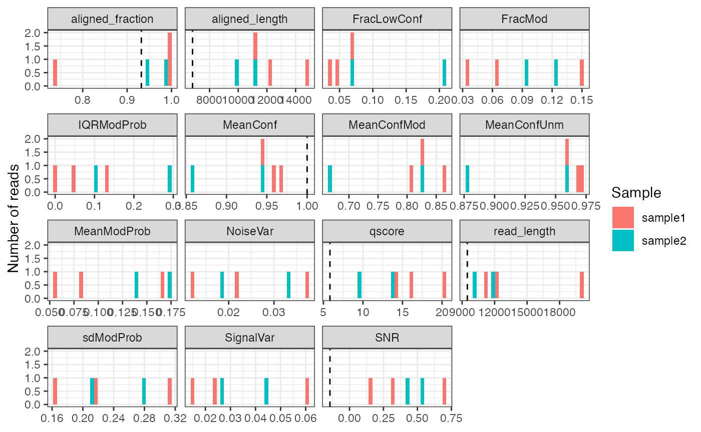

SingleMoleculeGenomicsIO
Source:vignettes/SingleMoleculeGenomicsIO.Rmd
SingleMoleculeGenomicsIO.RmdOverview
SingleMoleculeGenomicsIO provides tools for reading and
processing single-molecule genomics data in R. These include functions
for reading base modifications from modBam files,
e.g. generated by Dorado, or text files
generated by modkit,
efficient representation of such data as R objects, and functions to
manipulate and summarize such objects.
Current contributors include:
Installation
SingleMoleculeGenomicsIO can be installed from GitHub
via the BiocManager package:
if (!requireNamespace("BiocManager", quietly = TRUE))
install.packages("BiocManager")
BiocManager::install("fmicompbio/SingleMoleculeGenomicsIO")Load data
Load read-level data
We start by loading single-molecule genomics data at the level of
individual reads (a small example dataset with 6mA modifications
representing accessibility). Read-level data is provided as a
modBam file (standard bam file with modification data
stored in MM and ML tags, see SAMtags.pdf)
and is read using the readModBam() function from
SingleMoleculeGenomicsIO.
Alternatively, read-level modification data can also be extracted
from modBam files using modkit (see
readModkitExtract() to read the output generated by
modkit extract).
The small example modBam files contained in
SingleMoleculeGenomicsIO were generated using the Dorado aligner:
# load packages
library(SingleMoleculeGenomicsIO)
library(SummarizedExperiment)
library(Biostrings)
library(SparseArray)
library(BiocParallel)
# read-level 6mA data generated by 'dorado'
modbamfiles <- system.file("extdata",
c("6mA_1_10reads.bam", "6mA_2_10reads.bam"),
package = "SingleMoleculeGenomicsIO")
names(modbamfiles) <- c("sample1", "sample2")Modification data is read from these files using
readModBam():
se <- readModBam(bamfiles = modbamfiles,
regions = "chr1:6940000-7000000",
modbase = "a",
verbose = TRUE,
BPPARAM = BiocParallel::SerialParam())
#> ℹ extracting base modifications from modBAM files
#> ℹ finding unique genomic positions...
#> ✔ finding unique genomic positions... [78ms]
#>
#> ℹ collapsed 17739 positions to 7967 unique ones
#> ✔ collapsed 17739 positions to 7967 unique ones [237ms]
#>
se
#> class: RangedSummarizedExperiment
#> dim: 7967 2
#> metadata(3): readLevelData variantPositions filteredOutReads
#> assays(1): mod_prob
#> rownames: NULL
#> rowData names(0):
#> colnames(2): sample1 sample2
#> colData names(4): sample modbase n_reads readInfoThis will create a RangedSummarizedExperiment object
with positions in rows:
# rows are positions...
rowRanges(se)
#> UnstitchedGPos object with 7967 positions and 0 metadata columns:
#> seqnames pos strand
#> <Rle> <integer> <Rle>
#> [1] chr1 6925830 -
#> [2] chr1 6925834 -
#> [3] chr1 6925836 -
#> [4] chr1 6925837 -
#> [5] chr1 6925841 -
#> ... ... ... ...
#> [7963] chr1 6941611 -
#> [7964] chr1 6941614 -
#> [7965] chr1 6941620 -
#> [7966] chr1 6941622 -
#> [7967] chr1 6941631 -
#> -------
#> seqinfo: 1 sequence from an unspecified genome; no seqlengthsThe columns of se correspond to samples:
# ... and columns are samples
colData(se)
#> DataFrame with 2 rows and 4 columns
#> sample modbase n_reads
#> <character> <character> <integer>
#> sample1 sample1 a 3
#> sample2 sample2 a 2
#> readInfo
#> <List>
#> sample1 14.1428:20058:14801:...,16.0127:11305:11214:...,20.3082:12277:12227:...,...
#> sample2 9.67461:11834:11234:...,13.66480:10057:9898:...,...The sample names in the sample column are obtained from
the input files (here modbamfiles), or if the files are not
named will be automatically assigned (using "s1",
"s2" and so on, assuming that each file corresponds to a
separate sample).
Read-level information is contained in a list under
readInfo, with one element per sample:
se$readInfo
#> List of length 2
#> names(2): sample1 sample2Each sample typically contains several reads (see
se$n_reads), which correspond to the rows of
se$readInfo, for example for "sample1":
se$readInfo$sample1
#> DataFrame with 3 rows and 6 columns
#> qscore read_length
#> <numeric> <integer>
#> sample1-233e48a7-f379-4dcf-9270-958231125563 14.1428 20058
#> sample1-d52a5f6a-a60a-4f85-913e-eada84bfbfb9 16.0127 11305
#> sample1-92e906ae-cddb-4347-a114-bf9137761a8d 20.3082 12277
#> aligned_length variant_label
#> <integer> <character>
#> sample1-233e48a7-f379-4dcf-9270-958231125563 14801 NA
#> sample1-d52a5f6a-a60a-4f85-913e-eada84bfbfb9 11214 NA
#> sample1-92e906ae-cddb-4347-a114-bf9137761a8d 12227 NA
#> ref_strand aligned_fraction
#> <character> <numeric>
#> sample1-233e48a7-f379-4dcf-9270-958231125563 - 0.737910
#> sample1-d52a5f6a-a60a-4f85-913e-eada84bfbfb9 - 0.991950
#> sample1-92e906ae-cddb-4347-a114-bf9137761a8d - 0.995927Explore assay data
The single assay mod_prob is a DataFrame
with modification probabilities.
assayNames(se)
#> [1] "mod_prob"
m <- assay(se, "mod_prob")
m
#> DataFrame with 7967 rows and 2 columns
#> sample1 sample2
#> <NaMatrix> <NaMatrix>
#> 1 0:NA:NA NA:NA
#> 2 0:NA:NA NA:NA
#> 3 0:NA:NA NA:NA
#> 4 0:NA:NA NA:NA
#> 5 0.275390625:NA:NA NA:NA
#> ... ... ...
#> 7963 NA:NA:0.052734375 NA:NA
#> 7964 NA:NA:0.130859375 NA:NA
#> 7965 NA:NA:0.068359375 NA:NA
#> 7966 NA:NA:0.060546875 NA:NA
#> 7967 NA:NA:0.056640625 NA:NAIn order to store read-level data for variable numbers of reads per
sample, each sample column is not just a simple vector, but a
position-by-read NaMatrix (a sparse matrix object defined
in the SparseArray
package).
m$sample1
#> <7967 x 3 NaMatrix> of type "double" [nnacount=11300 (47%)]:
#> sample1-233e48a7-f379-4dcf-9270-958231125563
#> [1,] 0.0000000
#> [2,] 0.0000000
#> [3,] 0.0000000
#> [4,] 0.0000000
#> [5,] 0.2753906
#> ... .
#> [7963,] NA
#> [7964,] NA
#> [7965,] NA
#> [7966,] NA
#> [7967,] NA
#> sample1-d52a5f6a-a60a-4f85-913e-eada84bfbfb9
#> [1,] NA
#> [2,] NA
#> [3,] NA
#> [4,] NA
#> [5,] NA
#> ... .
#> [7963,] NA
#> [7964,] NA
#> [7965,] NA
#> [7966,] NA
#> [7967,] NA
#> sample1-92e906ae-cddb-4347-a114-bf9137761a8d
#> [1,] NA
#> [2,] NA
#> [3,] NA
#> [4,] NA
#> [5,] NA
#> ... .
#> [7963,] 0.05273438
#> [7964,] 0.13085938
#> [7965,] 0.06835938
#> [7966,] 0.06054688
#> [7967,] 0.05664062If a ‘flat’ matrix is needed, in which columns correspond to reads
instead of samples, it can be created using as.matrix().
Notice the number of columns in each of the objects:
ncol(se) # 2 samples
#> [1] 2
ncol(m$sample1) # 3 reads in "sample1"
#> [1] 3
ncol(m$sample2) # 2 reads in "sample2"
#> [1] 2
ncol(as.matrix(m)) # 5 reads in total
#> [1] 5One advantage of the grouping of reads per sample is that you can
easily perform per-sample operations using lapply (returns
a list) or endoapply (returns a
DataFrame):
lapply(m, ncol)
#> $sample1
#> [1] 3
#>
#> $sample2
#> [1] 2
endoapply(m, ncol)
#> DataFrame with 1 row and 2 columns
#> sample1 sample2
#> <integer> <integer>
#> 1 3 2The NaMatrix objects do not store NA values
and thus use much less memory compared to a normal (dense) matrix. The
NA values here occur at positions (rows) that are not
covered by the read of that column, and there are typically a large
fraction of NA values:
prod(dim(m$sample1)) # total number of values
#> [1] 23901
nnacount(m$sample1) # number of non-NA values
#> [1] 11300Important: These NA values have to be
excluded for example when calculating the average modification
probability for a position using mean(..., na.rm = TRUE),
otherwise the result will be NA for all incompletely
covered positions:
# modification probabilities at position "chr1:6928850:-"
(idx <- which(seqnames(se) == "chr1" & start(se) == 6928850 & strand(se) == "-"))
#> [1] 828
m[idx, ]
#> DataFrame with 1 row and 2 columns
#> sample1 sample2
#> <NaMatrix> <NaMatrix>
#> 1 0.623046875:0.099609375:NA NA:NA
# WRONG: take the mean of all values (including NAs)
lapply(m[idx, ], mean)
#> $sample1
#> [1] NA
#>
#> $sample2
#> [1] NA
# CORRECT: exclude the NA values (na.rm = TRUE)
lapply(m[idx, ], mean, na.rm = TRUE)
#> $sample1
#> [1] 0.3613281
#>
#> $sample2
#> [1] NaNNote that for sample2, in which no read overlaps the selected
position, mean(..., na.rm = TRUE) returns
NaN.
In most cases it is preferable to use the convenience functions in
SingleMoleculeGenomicsIO, such as
flattenReadLevelAssay() (see next section), to calculate
summaries over reads instead of the lapply(...) used above
for illustration.
Summarize read-level data
Summarized data can be obtained from the read-level data by calculating a per-position summary over the reads in each sample:
se_summary <- flattenReadLevelAssay(
se, statistics = c("Nmod", "Nvalid", "FracMod", "Pmod", "AvgConf"))As discussed above, this will correctly exclude non-observed values
and return zero values (for count assays "Nmod",
“Nvalid”) or NaN for assays with fractions
("FracMod", "Pmod" and
"AvgConf"), for positions without any observed data (see
for example "Pmod" in "sample2"):
assay(se_summary, "Pmod")[idx, ]
#> sample1 sample2
#> 0.3613281 NaNThe summary statistics to calculate are selected using the
statistics argument. By default,
flattenReadLevelAssay() will count the number of modified
(Nmod) and total (Nvalid) reads at each
position and sample, and calculate the fraction of modified bases from
the two (FracMod).
assay(se_summary, "Nmod")[idx, ]
#> sample1 sample2
#> 1 0
assay(se_summary, "Nvalid")[idx, ]
#> sample1 sample2
#> 2 0
assay(se_summary, "FracMod")[idx, ]
#> sample1 sample2
#> 0.5 NaNIn the above example, we additionally calculate the average
modification probability (Pmod) and the average confidence
of the modification calls per position (AvgConf). As we
have not changed the default keepReads = TRUE, we keep the
read-level assay from the input object (mod_prob) in the
returned object. Because of the grouping of reads by sample in
mod_prob, the dimensions of read-level or summary-level
objects remain identical:
# read-level data is retained in "mod_prob" assay
assayNames(se_summary)
#> [1] "mod_prob" "Nmod" "Nvalid" "FracMod" "Pmod" "AvgConf"
# ... which groups the reads by sample
assay(se_summary, "mod_prob")
#> DataFrame with 7967 rows and 2 columns
#> sample1 sample2
#> <NaMatrix> <NaMatrix>
#> 1 0:NA:NA NA:NA
#> 2 0:NA:NA NA:NA
#> 3 0:NA:NA NA:NA
#> 4 0:NA:NA NA:NA
#> 5 0.275390625:NA:NA NA:NA
#> ... ... ...
#> 7963 NA:NA:0.052734375 NA:NA
#> 7964 NA:NA:0.130859375 NA:NA
#> 7965 NA:NA:0.068359375 NA:NA
#> 7966 NA:NA:0.060546875 NA:NA
#> 7967 NA:NA:0.056640625 NA:NA
# the dimensions of read-level `se` and summarized `se_summary` are identical
dim(se)
#> [1] 7967 2
dim(se_summary)
#> [1] 7967 2Load summary-level data
As illustrated above, summary-level data (e.g. average modification
fraction at each position) can be calculated from read-level data.
Alternatively, it can also be directly read from modBam
files, which is faster and reduces the size of the object in memory. In
addition, there are other file formats that only store summary-level
data (e.g. bed files) that can also be imported using
SingleMoleculeGenomicsIO.
Read summary-level data from modBam files
To read summary-level data with readModBam(), we set the
level argument to "summary":
se_summary2 <- readModBam(bamfiles = modbamfiles,
regions = "chr1:6940000-7000000",
modbase = "a",
level = "summary",
verbose = TRUE,
BPPARAM = BiocParallel::SerialParam())
#> ℹ extracting base modifications from modBAM files
#> ⠙ 0.000 Mio. genomic positions processed (0.001 Mio./s) [2ms]
#> ℹ finding unique genomic positions...
#> ✔ finding unique genomic positions... [23ms]
#>
#> ⠙ 0.000 Mio. genomic positions processed (0.001 Mio./s) [2ms]ℹ collapsed 11211 positions to 7967 unique ones
#> ✔ collapsed 11211 positions to 7967 unique ones [38ms]
#>
#> ⠙ 0.000 Mio. genomic positions processed (0.001 Mio./s) [2ms]
se_summary2
#> class: RangedSummarizedExperiment
#> dim: 7967 2
#> metadata(1): readLevelData
#> assays(3): Nmod Nvalid FracMod
#> rownames: NULL
#> rowData names(0):
#> colnames(2): sample1 sample2
#> colData names(2): sample modbaseNotice that se_summary2 contains only summary-level
assays (Nmod, Nvalid and
FracMod), and no read-level modifications anymore (assay
mod_prob). Otherwise, it resembles the read-level object
se, for example it covers the same genomic positions:
# rows are positions...
rowRanges(se)
#> UnstitchedGPos object with 7967 positions and 0 metadata columns:
#> seqnames pos strand
#> <Rle> <integer> <Rle>
#> [1] chr1 6925830 -
#> [2] chr1 6925834 -
#> [3] chr1 6925836 -
#> [4] chr1 6925837 -
#> [5] chr1 6925841 -
#> ... ... ... ...
#> [7963] chr1 6941611 -
#> [7964] chr1 6941614 -
#> [7965] chr1 6941620 -
#> [7966] chr1 6941622 -
#> [7967] chr1 6941631 -
#> -------
#> seqinfo: 1 sequence from an unspecified genome; no seqlengths
rowRanges(se_summary2)
#> UnstitchedGPos object with 7967 positions and 0 metadata columns:
#> seqnames pos strand
#> <Rle> <integer> <Rle>
#> [1] chr1 6925830 -
#> [2] chr1 6925834 -
#> [3] chr1 6925836 -
#> [4] chr1 6925837 -
#> [5] chr1 6925841 -
#> ... ... ... ...
#> [7963] chr1 6941611 -
#> [7964] chr1 6941614 -
#> [7965] chr1 6941620 -
#> [7966] chr1 6941622 -
#> [7967] chr1 6941631 -
#> -------
#> seqinfo: 1 sequence from an unspecified genome; no seqlengthsThe summary-level assays generated from se (see
se_summary above) are also identical to the ones directly
read from the modBam file into
se_summary2:
Read summary-level data from bedMethyl files
As mentioned, summary-level data can also be imported from
bedMethyl files that contain total and methylated counts
for individual positions::
# collapsed 5mC data for a small genomic window in bedMethyl format
bedmethylfiles <- system.file("extdata",
c("modkit_pileup_5mC_1.bed.gz",
"modkit_pileup_5mC_2.bed.gz"),
package = "SingleMoleculeGenomicsIO")
# file with sequence of the reference genome in fasta format
reffile <- system.file("extdata", "reference.fa.gz",
package = "SingleMoleculeGenomicsIO")As these bedMethyl files represent 5mC modifications, we
set modbase = "m" in the readBedMethyl() call
(the same could be done in readModBam to load
modBam files representing 5mC modifications). For a full
list of possible modifications see the section about base modifications
in the SAM
tag specification). We also provide a sequence reference (genome
sequence) from which to extract the sequence context for each
position.
names(bedmethylfiles) <- c("sample1", "sample2")
se_bed <- readBedMethyl(bedmethylfiles,
modbase = "m",
sequenceContextWidth = 3,
sequenceReference = reffile,
BPPARAM = BiocParallel::SerialParam())
se_bed
#> class: RangedSummarizedExperiment
#> dim: 12020 2
#> metadata(1): readLevelData
#> assays(2): Nmod Nvalid
#> rownames: NULL
#> rowData names(1): sequenceContext
#> colnames(2): sample1 sample2
#> colData names(2): sample modbaseAs before, the summarized data is read into a
RangedSummarizedExperiment object, with rows corresponding
to genomic positions:
rowRanges(se_bed)
#> UnstitchedGPos object with 12020 positions and 1 metadata column:
#> seqnames pos strand | sequenceContext
#> <Rle> <integer> <Rle> | <DNAStringSet>
#> [1] chr1 6937685 - | GCT
#> [2] chr1 6937686 + | GCA
#> [3] chr1 6937688 + | ACT
#> [4] chr1 6937689 + | CTT
#> [5] chr1 6937690 - | TAA
#> ... ... ... ... . ...
#> [12016] chr1 6957051 - | CCT
#> [12017] chr1 6957052 - | TCC
#> [12018] chr1 6957054 + | AAA
#> [12019] chr1 6957056 - | CCT
#> [12020] chr1 6957057 - | CCC
#> -------
#> seqinfo: 1 sequence from an unspecified genome; no seqlengths… and the columns correspond to the different samples (here
corresponding to the names of the two input files in
bedmethylfiles):
colnames(se_bed)
#> [1] "sample1" "sample2"The data is stored in two matrices (assays) called Nmod
(the number of modified bases per sample and position) and
Nvalid (the number of valid total read covering that
position in each sample):
assayNames(se_bed)
#> [1] "Nmod" "Nvalid"
head(assay(se_bed, "Nmod"))
#> sample1 sample2
#> [1,] 6 0
#> [2,] 1 5
#> [3,] 1 0
#> [4,] 0 0
#> [5,] 0 0
#> [6,] 0 0
head(assay(se_bed, "Nvalid"))
#> sample1 sample2
#> [1,] 15 0
#> [2,] 16 15
#> [3,] 16 15
#> [4,] 0 1
#> [5,] 0 1
#> [6,] 1 0From these, we can easily calculate the fraction of modifications:
fraction_modified <- assay(se_bed, "Nmod") / assay(se_bed, "Nvalid")
head(fraction_modified)
#> sample1 sample2
#> [1,] 0.4000 NaN
#> [2,] 0.0625 0.3333333
#> [3,] 0.0625 0.0000000
#> [4,] NaN 0.0000000
#> [5,] NaN 0.0000000
#> [6,] 0.0000 NaNAs before, non-finite fractions result from positions that had zero coverage in a given sample.
Load data for a random subset of the reads
By default, readModBam() will load all reads overlapping
the regions indicated by the regions argument. However, it
is also possible to load a random subset of reads (this can be useful
e.g. to calculate distributions of quality scores, using reads aligning
to different parts of the genome but without the need to load the entire
modBam file into R).
se_sample <- readModBam(bamfiles = modbamfiles,
modbase = "a",
nAlnsToSample = 5,
seqnamesToSampleFrom = "chr1",
verbose = TRUE,
BPPARAM = BiocParallel::SerialParam(RNGseed = 1327828L))
#> ℹ extracting base modifications from modBAM files
#> ⠙ 0.000 Mio. genomic positions processed (0.001 Mio./s) [2ms]ℹ opening input file /Users/runner/work/_temp/Library/SingleMoleculeGenomicsIO/extdata/6mA_1_10reads.bam using 1 thread
#> ⠙ 0.000 Mio. genomic positions processed (0.001 Mio./s) [2ms]ℹ sampling alignments with probability 0.5
#> ⠙ 0.000 Mio. genomic positions processed (0.001 Mio./s) [2ms]ℹ reading alignments overlapping 1 region
#> ⠙ 0.000 Mio. genomic positions processed (0.001 Mio./s) [2ms]ℹ removed 150 unaligned (e.g. soft-masked) of 41618 called bases
#> ⠙ 0.000 Mio. genomic positions processed (0.001 Mio./s) [2ms]ℹ read 5 alignments
#> ⠙ 0.000 Mio. genomic positions processed (0.001 Mio./s) [2ms]ℹ opening input file /Users/runner/work/_temp/Library/SingleMoleculeGenomicsIO/extdata/6mA_2_10reads.bam using 1 thread
#> ⠙ 0.000 Mio. genomic positions processed (0.001 Mio./s) [2ms]ℹ sampling alignments with probability 0.5
#> ⠙ 0.000 Mio. genomic positions processed (0.001 Mio./s) [2ms]ℹ reading alignments overlapping 1 region
#> ⠙ 0.000 Mio. genomic positions processed (0.001 Mio./s) [2ms]ℹ removed 1165 unaligned (e.g. soft-masked) of 80587 called bases
#> ⠙ 0.000 Mio. genomic positions processed (0.001 Mio./s) [2ms]ℹ read 7 alignments
#> ⠙ 0.000 Mio. genomic positions processed (0.001 Mio./s) [2ms]ℹ finding unique genomic positions...
#> ✔ finding unique genomic positions... [25ms]
#>
#> ⠙ 0.000 Mio. genomic positions processed (0.001 Mio./s) [2ms]ℹ collapsed 31912 positions to 7238 unique ones
#> ✔ collapsed 31912 positions to 7238 unique ones [155ms]
#>
#> ⠙ 0.000 Mio. genomic positions processed (0.001 Mio./s) [2ms]
se_sample$n_reads
#> [1] 5 7Note that the exact number of sampled reads may not be identical to the requested number. One reason for this is that the requested number is combined with the total number of alignments to calculate the fraction of reads to be sampled (in this small case, 0.5), and each alignment will be retained with this probability.
Expand the SummarizedExperiment object to single base
resolution
The objects returned by the reading functions above contain data only
for the positions with an observable modification state for the given
modbase. For cases where a single nucleotide resolution is required
(i.e., where the rows in the object must cover each position within a
region), the expandSEToBaseSpace will return a suitable
object. Note that any strand information in the original positions will
be ignored.
se_expand <- expandSEToBaseSpace(se)
dim(se_expand)
#> [1] 15802 2Add quality scores and filter SummarizedExperiment
object
SingleMoleculeGenomicsIO provides functionality to
calculate a variety of statistics for individual reads. The results will
be added as a new column in the colData of the
SummarizedExperiment.
# start from read-level data
# ... some read-level statistics were added already when reading the data
se$readInfo$sample1
#> DataFrame with 3 rows and 6 columns
#> qscore read_length
#> <numeric> <integer>
#> sample1-233e48a7-f379-4dcf-9270-958231125563 14.1428 20058
#> sample1-d52a5f6a-a60a-4f85-913e-eada84bfbfb9 16.0127 11305
#> sample1-92e906ae-cddb-4347-a114-bf9137761a8d 20.3082 12277
#> aligned_length variant_label
#> <integer> <character>
#> sample1-233e48a7-f379-4dcf-9270-958231125563 14801 NA
#> sample1-d52a5f6a-a60a-4f85-913e-eada84bfbfb9 11214 NA
#> sample1-92e906ae-cddb-4347-a114-bf9137761a8d 12227 NA
#> ref_strand aligned_fraction
#> <character> <numeric>
#> sample1-233e48a7-f379-4dcf-9270-958231125563 - 0.737910
#> sample1-d52a5f6a-a60a-4f85-913e-eada84bfbfb9 - 0.991950
#> sample1-92e906ae-cddb-4347-a114-bf9137761a8d - 0.995927
# ... calculate additional read statistics
se <- addReadStats(se, name = "QC",
BPPARAM = SerialParam())
#> Warning: Too few points to estimate noise floor (1); raw noise variances
#> are used.
#> Warning: Too few points to estimate noise floor (0); raw noise variances
#> are used.
se$QC$sample1
#> DataFrame with 3 rows and 13 columns
#> MeanModProb FracMod MeanConf
#> <numeric> <numeric> <numeric>
#> sample1-233e48a7-f379-4dcf-9270-958231125563 0.1652868 0.1498969 0.943914
#> sample1-d52a5f6a-a60a-4f85-913e-eada84bfbfb9 0.0835376 0.0646707 0.958320
#> sample1-92e906ae-cddb-4347-a114-bf9137761a8d 0.0556013 0.0347512 0.965854
#> MeanConfUnm MeanConfMod
#> <numeric> <numeric>
#> sample1-233e48a7-f379-4dcf-9270-958231125563 0.957961 0.864255
#> sample1-d52a5f6a-a60a-4f85-913e-eada84bfbfb9 0.967633 0.823622
#> sample1-92e906ae-cddb-4347-a114-bf9137761a8d 0.971512 0.808703
#> FracLowConf IQRModProb sdModProb
#> <numeric> <numeric> <numeric>
#> sample1-233e48a7-f379-4dcf-9270-958231125563 0.0680724 0.1308594 0.312860
#> sample1-d52a5f6a-a60a-4f85-913e-eada84bfbfb9 0.0470060 0.0488281 0.215142
#> sample1-92e906ae-cddb-4347-a114-bf9137761a8d 0.0355852 0.0000000 0.164023
#> ACModProb
#> <list>
#> sample1-233e48a7-f379-4dcf-9270-958231125563 0.1306906,0.0840176,0.0591518,...
#> sample1-d52a5f6a-a60a-4f85-913e-eada84bfbfb9 0.0619512,0.0479904,0.0392903,...
#> sample1-92e906ae-cddb-4347-a114-bf9137761a8d -0.00193260,-0.01562365,-0.00424019,...
#> PACModProb
#> <list>
#> sample1-233e48a7-f379-4dcf-9270-958231125563 -0.0415954,-0.0216324,-0.0132802,...
#> sample1-d52a5f6a-a60a-4f85-913e-eada84bfbfb9 -0.00443190,-0.00209608,-0.00710440,...
#> sample1-92e906ae-cddb-4347-a114-bf9137761a8d -0.01637500, 0.00794205,-0.02053895,...
#> SNR SignalVar NoiseVar
#> <numeric> <numeric> <numeric>
#> sample1-233e48a7-f379-4dcf-9270-958231125563 0.698999 0.0605703 0.0373113
#> sample1-d52a5f6a-a60a-4f85-913e-eada84bfbfb9 0.154130 0.0243781 0.0219079
#> sample1-92e906ae-cddb-4347-a114-bf9137761a8d 0.307366 0.0148793 0.0120242The distribution of the quality statistics can also be plotted, which is often helpful in order to decide on cutoffs for downstream analysis. Note that in the current example data, each sample contains only a few reads and hence the plot below is very sparse.
plotReadStats(se, readInfoCol = "readInfo", qcCol = "QC")
The filterReads() function can be used to filter the set
of reads based on various quality indicators. This step requires that
the read statistics that will be used for the filtering have been
calculated as indicated above.
se_filtreads <- filterReads(se, readInfoCol = "readInfo",
qcCol = "QC", minQscore = 10,
minAlignedFraction = 0.8)
# number of retained reads for each sample
lapply(assay(se_filtreads, "mod_prob"), ncol)
#> $sample1
#> [1] 2
#>
#> $sample2
#> [1] 1
# tables with the reason behind each filtered read
metadata(se_filtreads)$filteredOutReads
#> $sample1
#> <1 x 9 SparseMatrix> of type "logical" [nzcount=1 (11%)]:
#> Qscore Entropy ... AllNA
#> sample1-233e48a7-f379-4dcf-9270-958231125563 FALSE FALSE . FALSE
#>
#> $sample2
#> <1 x 9 SparseMatrix> of type "logical" [nzcount=1 (11%)]:
#> Qscore Entropy ... AllNA
#> sample2-034b625e-6230-4f8d-a713-3a32cd96c298 TRUE FALSE . FALSEIt is also possible to filter out positions (rows), based on a
variety of criteria, using the filterPositions() function.
Typical filter criteria include the sequence context of the observation
and the read coverage.
In order to filter by sequence context, we first need to add it to
our object (if this was not already done when the data was imported).
This can be done using the addSeqContext() function. We can
extract sequence contexts of arbitrary width, based on a provided genome
reference.
gnm <- readDNAStringSet(system.file("extdata",
"reference.fa.gz",
package = "SingleMoleculeGenomicsIO"))
se <- addSeqContext(se, sequenceContextWidth = 1, sequenceReference = gnm)Next, we can filter the object to only contain positions where the
annotated nucleotide at the corresponding genomic position is an
A. Any IUPAC code can be used - for example,
NCG would match trinucleotide contexts with a central C
followed by a G (and preceded by any base).
# check sequence context distribution across observations
table(as.character(rowData(se)$sequenceContext))
#>
#> A C G T
#> 7556 86 284 41
se_posfilt <- filterPositions(se, filters = "sequenceContext",
sequenceContext = "A")
dim(se_posfilt)
#> [1] 7556 2
# check that the sequence context of all retained positions is A
table(as.character(rowData(se_posfilt)$sequenceContext))
#>
#> A
#> 7556Subset and regroup reads
After importing read-level data with
SingleMoleculeGenomicsIO, the set of reads can be subset
using the subsetReads() function. The subsetting can be
done either by specifying the read names or indices to retain, or by
asking for a random subset of reads.
# subset to only the first two reads per sample
(reads_to_keep <- lapply(assay(se, "mod_prob"), function(s) 1:2))
#> $sample1
#> [1] 1 2
#>
#> $sample2
#> [1] 1 2
se_subset <- subsetReads(se, reads = reads_to_keep)
lapply(assay(se_subset, "mod_prob"), ncol)
#> $sample1
#> [1] 2
#>
#> $sample2
#> [1] 2
# subset to specified reads
(reads_to_keep <- unlist(lapply(assay(se, "mod_prob"), function(s) colnames(s)[c(1, 2)])))
#> sample11
#> "sample1-233e48a7-f379-4dcf-9270-958231125563"
#> sample12
#> "sample1-d52a5f6a-a60a-4f85-913e-eada84bfbfb9"
#> sample21
#> "sample2-034b625e-6230-4f8d-a713-3a32cd96c298"
#> sample22
#> "sample2-d03efe3b-a45b-430b-9cb6-7e5882e4faf8"
se_subset <- subsetReads(se, reads = reads_to_keep)
lapply(assay(se_subset, "mod_prob"), ncol)
#> $sample1
#> [1] 2
#>
#> $sample2
#> [1] 2
# request a random set of two reads per sample
se_subset <- subsetReads(se, randomSubset = 2)
lapply(assay(se_subset, "mod_prob"), ncol)
#> $sample1
#> [1] 2
#>
#> $sample2
#> [1] 2See ?subsetReads for more subsetting options.
In some situations, a regrouping of the reads is more
suitable than a subsetting. By default, the reads will be grouped by the
sample they originate from (i.e., each column in the
SummarizedExperiment corresponds to a sample). The
regroupReads() and regroupReadsByColData()
functions allow us to reorganize the reads in such a way that each
column of the object instead corresponds to another read property (e.g.,
the strand from which the read originates). The new groups can be
defined manually as a named list of read identifiers (for
regroupReads()), or be generated automatically from a
categorical column in the read-level column annotations (for
regroupReadsByColData()). Here we illustrate how to regroup
the reads by the strand.
# read strand is stored in the column annotations (ref_strand)
se$readInfo$sample1
#> DataFrame with 3 rows and 6 columns
#> qscore read_length
#> <numeric> <integer>
#> sample1-233e48a7-f379-4dcf-9270-958231125563 14.1428 20058
#> sample1-d52a5f6a-a60a-4f85-913e-eada84bfbfb9 16.0127 11305
#> sample1-92e906ae-cddb-4347-a114-bf9137761a8d 20.3082 12277
#> aligned_length variant_label
#> <integer> <character>
#> sample1-233e48a7-f379-4dcf-9270-958231125563 14801 NA
#> sample1-d52a5f6a-a60a-4f85-913e-eada84bfbfb9 11214 NA
#> sample1-92e906ae-cddb-4347-a114-bf9137761a8d 12227 NA
#> ref_strand aligned_fraction
#> <character> <numeric>
#> sample1-233e48a7-f379-4dcf-9270-958231125563 - 0.737910
#> sample1-d52a5f6a-a60a-4f85-913e-eada84bfbfb9 - 0.991950
#> sample1-92e906ae-cddb-4347-a114-bf9137761a8d - 0.995927
# regroup reads by strand, ignoring the sample information
se_regroup <- regroupReadsByColData(se, colNames = "ref_strand",
withinSample = FALSE)
colnames(se_regroup)
#> [1] "-" "+"
# regroup reads by strand, within each sample
se_regroup <- regroupReadsByColData(se, colNames = "ref_strand",
withinSample = TRUE)
colnames(se_regroup)
#> [1] "sample1--" "sample2--" "sample2-+"Add read segment annotations
Read segment annotation allow us to store information about specific
subregions of reads. These could, for example, represent inferred
locations of nucleosomes or transcription factor binding sites. The
segments need to be provided as a list of IRangesList
objects (one per sample), with each element of an
IRangesList providing the annotations for one read.
# define segments
segs <- list(sample1 = IRangesList(
"sample1-d52a5f6a-a60a-4f85-913e-eada84bfbfb9" = IRanges(
start = 6925834, width = 140),
"sample1-233e48a7-f379-4dcf-9270-958231125563" = IRanges(
start = c(6926000, 6926200), width = 140)),
sample2 = IRangesList())
# add segment annotation to se
se <- annotateReadSegments(se, irlList = segs, name = "nucl")
se$nucl
#> $sample1
#> IRangesList object of length 3:
#> $`sample1-233e48a7-f379-4dcf-9270-958231125563`
#> IRanges object with 2 ranges and 0 metadata columns:
#> start end width
#> <integer> <integer> <integer>
#> [1] 6926000 6926139 140
#> [2] 6926200 6926339 140
#>
#> $`sample1-d52a5f6a-a60a-4f85-913e-eada84bfbfb9`
#> IRanges object with 1 range and 0 metadata columns:
#> start end width
#> <integer> <integer> <integer>
#> [1] 6925834 6925973 140
#>
#> $`sample1-92e906ae-cddb-4347-a114-bf9137761a8d`
#> IRanges object with 0 ranges and 0 metadata columns:
#> start end width
#> <integer> <integer> <integer>
#>
#>
#> $sample2
#> IRangesList object of length 2:
#> $`sample2-034b625e-6230-4f8d-a713-3a32cd96c298`
#> IRanges object with 0 ranges and 0 metadata columns:
#> start end width
#> <integer> <integer> <integer>
#>
#> $`sample2-d03efe3b-a45b-430b-9cb6-7e5882e4faf8`
#> IRanges object with 0 ranges and 0 metadata columns:
#> start end width
#> <integer> <integer> <integer>Count state pairs
The import functions exemplified above all return a
SummarizedExperiment object with read- and/or summary-level
data. For certain applications, other data representations are more
suitable. The countStatePairs() function allows us to parse
a modBam file and tabulate the number of pairs of bases at
a given distance and with a given combination of modification
states.
sp <- countStatePairs(bamfile = modbamfiles[1],
modbase = "a",
windowSize = 200,
BPPARAM = BiocParallel::SerialParam(),
verbose = FALSE)
sp
#> DataFrame with 200 rows and 5 columns
#> S unmod_unmod unmod_mod mod_unmod mod_mod
#> <integer> <numeric> <numeric> <numeric> <numeric>
#> 1 1 27084 0 0 2461
#> 2 2 8877 281 340 408
#> 3 3 9131 441 439 264
#> 4 4 8140 399 403 282
#> 5 5 8565 485 493 164
#> ... ... ... ... ... ...
#> 196 196 7289 578 572 114
#> 197 197 7351 589 590 123
#> 198 198 7566 635 591 140
#> 199 199 7491 624 565 129
#> 200 200 7377 580 575 119Session info
sessioninfo::session_info()
#> ─ Session info ───────────────────────────────────────────────────────────────
#> setting value
#> version R Under development (unstable) (2026-01-16 r89305)
#> os macOS Sequoia 15.7.3
#> system aarch64, darwin20
#> ui X11
#> language en
#> collate en_US.UTF-8
#> ctype en_US.UTF-8
#> tz UTC
#> date 2026-01-17
#> pandoc 3.1.11 @ /usr/local/bin/ (via rmarkdown)
#> quarto NA
#>
#> ─ Packages ───────────────────────────────────────────────────────────────────
#> package * version date (UTC) lib source
#> abind * 1.4-8 2024-09-12 [1] CRAN (R 4.6.0)
#> Biobase * 2.71.0 2025-11-12 [1] Bioconductor 3.23 (R 4.6.0)
#> BiocGenerics * 0.57.0 2025-11-13 [1] Bioconductor 3.23 (R 4.6.0)
#> BiocIO 1.21.0 2025-11-12 [1] Bioconductor 3.23 (R 4.6.0)
#> BiocParallel * 1.45.0 2025-11-12 [1] Bioconductor 3.23 (R 4.6.0)
#> Biostrings * 2.79.4 2026-01-07 [1] Bioconductor 3.23 (R 4.6.0)
#> bitops 1.0-9 2024-10-03 [1] CRAN (R 4.6.0)
#> BSgenome 1.79.1 2025-11-04 [1] Bioconductor 3.23 (R 4.6.0)
#> bslib 0.9.0 2025-01-30 [1] CRAN (R 4.6.0)
#> cachem 1.1.0 2024-05-16 [1] CRAN (R 4.6.0)
#> cigarillo 1.1.0 2025-11-12 [1] Bioconductor 3.23 (R 4.6.0)
#> cli 3.6.5 2025-04-23 [1] CRAN (R 4.6.0)
#> codetools 0.2-20 2024-03-31 [2] CRAN (R 4.6.0)
#> crayon 1.5.3 2024-06-20 [1] CRAN (R 4.6.0)
#> curl 7.0.0 2025-08-19 [1] CRAN (R 4.6.0)
#> data.table 1.17.8 2025-07-10 [1] CRAN (R 4.6.0)
#> DelayedArray 0.37.0 2025-11-13 [1] Bioconductor 3.23 (R 4.6.0)
#> desc 1.4.3 2023-12-10 [1] CRAN (R 4.6.0)
#> digest 0.6.39 2025-11-19 [1] CRAN (R 4.6.0)
#> dplyr 1.1.4 2023-11-17 [1] CRAN (R 4.6.0)
#> evaluate 1.0.5 2025-08-27 [1] CRAN (R 4.6.0)
#> farver 2.1.2 2024-05-13 [1] CRAN (R 4.6.0)
#> fastmap 1.2.0 2024-05-15 [1] CRAN (R 4.6.0)
#> fs 1.6.6 2025-04-12 [1] CRAN (R 4.6.0)
#> generics * 0.1.4 2025-05-09 [1] CRAN (R 4.6.0)
#> GenomicAlignments 1.47.0 2025-10-31 [1] Bioconductor 3.23 (R 4.6.0)
#> GenomicRanges * 1.63.1 2025-12-08 [1] Bioconductor 3.23 (R 4.6.0)
#> ggplot2 4.0.1 2025-11-14 [1] CRAN (R 4.6.0)
#> glue 1.8.0 2024-09-30 [1] CRAN (R 4.6.0)
#> gtable 0.3.6 2024-10-25 [1] CRAN (R 4.6.0)
#> htmltools 0.5.8.1 2024-04-04 [1] CRAN (R 4.6.0)
#> httr 1.4.7 2023-08-15 [1] CRAN (R 4.6.0)
#> IRanges * 2.45.0 2025-11-12 [1] Bioconductor 3.23 (R 4.6.0)
#> jquerylib 0.1.4 2021-04-26 [1] CRAN (R 4.6.0)
#> jsonlite 2.0.0 2025-03-27 [1] CRAN (R 4.6.0)
#> knitr 1.50 2025-03-16 [1] CRAN (R 4.6.0)
#> labeling 0.4.3 2023-08-29 [1] CRAN (R 4.6.0)
#> lattice 0.22-7 2025-04-02 [2] CRAN (R 4.6.0)
#> lifecycle 1.0.4 2023-11-07 [1] CRAN (R 4.6.0)
#> magrittr 2.0.4 2025-09-12 [1] CRAN (R 4.6.0)
#> Matrix * 1.7-4 2025-08-28 [2] CRAN (R 4.6.0)
#> MatrixGenerics * 1.23.0 2025-11-12 [1] Bioconductor 3.23 (R 4.6.0)
#> matrixStats * 1.5.0 2025-01-07 [1] CRAN (R 4.6.0)
#> pillar 1.11.1 2025-09-17 [1] CRAN (R 4.6.0)
#> pkgconfig 2.0.3 2019-09-22 [1] CRAN (R 4.6.0)
#> pkgdown 2.2.0.9000 2025-12-03 [1] Github (r-lib/pkgdown@c07d935)
#> purrr 1.2.0 2025-11-04 [1] CRAN (R 4.6.0)
#> R.methodsS3 1.8.2 2022-06-13 [1] CRAN (R 4.6.0)
#> R.oo 1.27.1 2025-05-02 [1] CRAN (R 4.6.0)
#> R.utils 2.13.0 2025-02-24 [1] CRAN (R 4.6.0)
#> R6 2.6.1 2025-02-15 [1] CRAN (R 4.6.0)
#> ragg 1.5.0 2025-09-02 [1] CRAN (R 4.6.0)
#> RColorBrewer 1.1-3 2022-04-03 [1] CRAN (R 4.6.0)
#> Rcpp 1.1.0 2025-07-02 [1] CRAN (R 4.6.0)
#> RCurl 1.98-1.17 2025-03-22 [1] CRAN (R 4.6.0)
#> restfulr 0.0.16 2025-06-27 [1] CRAN (R 4.6.0)
#> rjson 0.2.23 2024-09-16 [1] CRAN (R 4.6.0)
#> rlang 1.1.6 2025-04-11 [1] CRAN (R 4.6.0)
#> rmarkdown 2.30 2025-09-28 [1] CRAN (R 4.6.0)
#> Rsamtools 2.27.0 2025-10-31 [1] Bioconductor 3.23 (R 4.6.0)
#> rtracklayer 1.71.3 2025-12-14 [1] Bioconductor 3.23 (R 4.6.0)
#> S4Arrays * 1.11.1 2026-01-17 [1] Github (Bioconductor/S4Arrays@b7ddb8c)
#> S4Vectors * 0.49.0 2025-11-12 [1] Bioconductor 3.23 (R 4.6.0)
#> S7 0.2.1 2025-11-14 [1] CRAN (R 4.6.0)
#> sass 0.4.10 2025-04-11 [1] CRAN (R 4.6.0)
#> scales 1.4.0 2025-04-24 [1] CRAN (R 4.6.0)
#> Seqinfo * 1.1.0 2025-11-12 [1] Bioconductor 3.23 (R 4.6.0)
#> sessioninfo 1.2.3 2025-02-05 [1] CRAN (R 4.6.0)
#> SingleMoleculeGenomicsIO * 0.1.0 2026-01-17 [1] Bioconductor
#> SparseArray * 1.11.10 2026-01-17 [1] Github (Bioconductor/SparseArray@fa5a507)
#> SummarizedExperiment * 1.41.0 2025-10-31 [1] Bioconductor 3.23 (R 4.6.0)
#> systemfonts 1.3.1 2025-10-01 [1] CRAN (R 4.6.0)
#> textshaping 1.0.4 2025-10-10 [1] CRAN (R 4.6.0)
#> tibble 3.3.0 2025-06-08 [1] CRAN (R 4.6.0)
#> tidyr 1.3.1 2024-01-24 [1] CRAN (R 4.6.0)
#> tidyselect 1.2.1 2024-03-11 [1] CRAN (R 4.6.0)
#> vctrs 0.6.5 2023-12-01 [1] CRAN (R 4.6.0)
#> withr 3.0.2 2024-10-28 [1] CRAN (R 4.6.0)
#> xfun 0.54 2025-10-30 [1] CRAN (R 4.6.0)
#> XML 3.99-0.20 2025-11-08 [1] CRAN (R 4.6.0)
#> XVector * 0.51.0 2025-11-12 [1] Bioconductor 3.23 (R 4.6.0)
#> yaml 2.3.10 2024-07-26 [1] CRAN (R 4.6.0)
#>
#> [1] /Users/runner/work/_temp/Library
#> [2] /Library/Frameworks/R.framework/Versions/4.6-arm64/Resources/library
#> * ── Packages attached to the search path.
#>
#> ──────────────────────────────────────────────────────────────────────────────